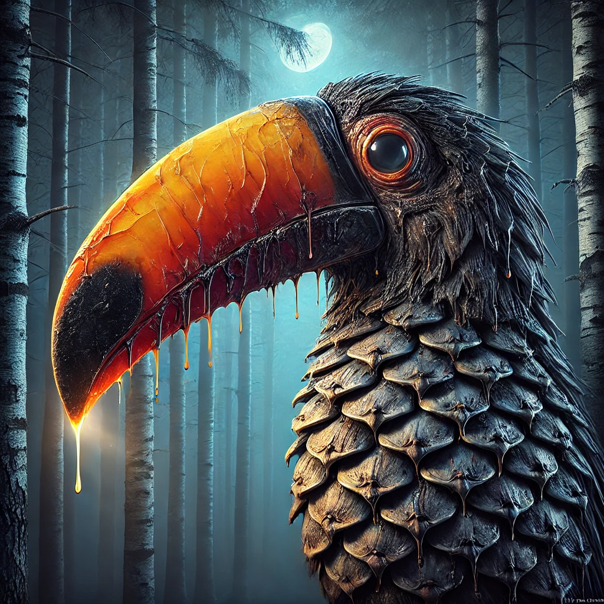

Esplora i Ginocchi
Punturirma
 Roboshop
Roboshop Robinario
Robinario Prepezio
Prepezio Gorettore
GorettoreGuerraniglio
Tossicozza
 Scarabarman
Scarabarman Sborniadrago
Sborniadrago Tigrallo
Tigrallo Roboraffa
Roboraffa Florona
Florona Ran-occhio
Ran-occhioArundizilla
Gelsosauro
 Lavandasma
Lavandasma Salviananda
Salviananda Koajhonny
Koajhonny Rosiro
Rosiro Rosella
Rosella Cybermint
Cybermint Rosmaruma
Rosmaruma Cetriolana 8ª
Cetriolana 8ª Rosmanguilla
Rosmanguilla Banona
Banona Tony E./Ans.
Tony E./Ans. Cervarancio
Cervarancio Merlotta
Merlotta Corvananas
Corvananas Fiammaciofo
Fiammaciofo R. Cagnolina
R. Cagnolina Pipimone
Pipimone Eremillo
Eremillo Mangodillo
Mangodillo Lampolpo
Lampolpo Delfimaru
DelfimaruPignacano
 Pompecora
Pompecora Winenot?
Winenot? Callista
Callista Cannellorca
CannellorcaAnicinzia
Fumello
 Peperonbro
Peperonbro Blobaffè
Blobaffè Speziatopo
SpeziatopoBorghesiglio
Teabear
 Tzatzikeye
Tzatzikeye Fuega
Fuega